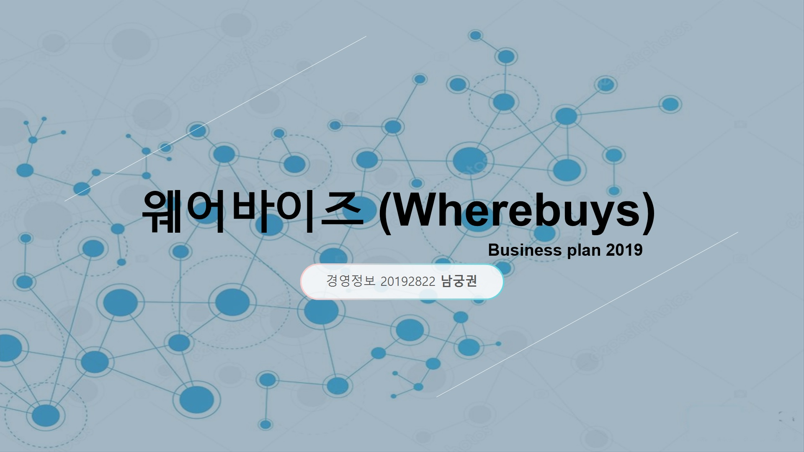

|
제가 19년 1학기 글쓰기 과목에서 처음 써본 논문, 'Can you speak Jazzlish?'입니다.
말은 논문이지만, 사실상 영화 'LALA Land'를 본 후 쓰게 된 2차 창작이라고 봐 주시면 더 편하실 것 같습니다. 작중 세바스찬이 미아에게 재즈의 시초는 대화 수단이었다 라며 설명하는 모습을 보며 "정말 재즈가 대화수단이 될 수 있을까?" 하는 생각에 작성하였습니다. 본문에는 정말 재즈는 언어의 역할을 할 수 있을까, 그리고 만약 그렇다면 단순한 멜로디와 뜻을 전하는 이야기를 나누는 기준을 무엇인가에 대한 내용이 실려 있습니다. 전문은 여기(링크)를 눌러 다운로드하여 보실 수 있습니다. |
|  |
가상기업 '웨어바이즈'를 창업하는 상황을 가정하여 이의 사업계획서를 작성해 보았습니다.
오프라인 쇼핑계의 '트리바고'를 떠올려 위치를 기반으로 주변 상가 상품의 가격을 비교해 주는 사업아이템 입니다. 대학 새내기때의 ppt이니만큼 부족함이 많지만 완성을 했다는 것에 의의를 두고 싶습니다. ppt의 전문은 여기(링크)를 통해 보실 수 있습니다. |